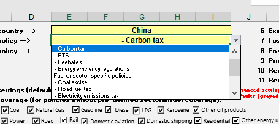
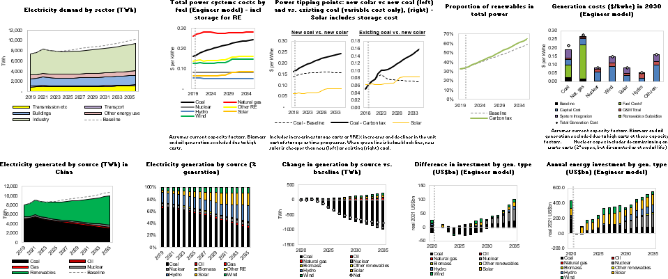
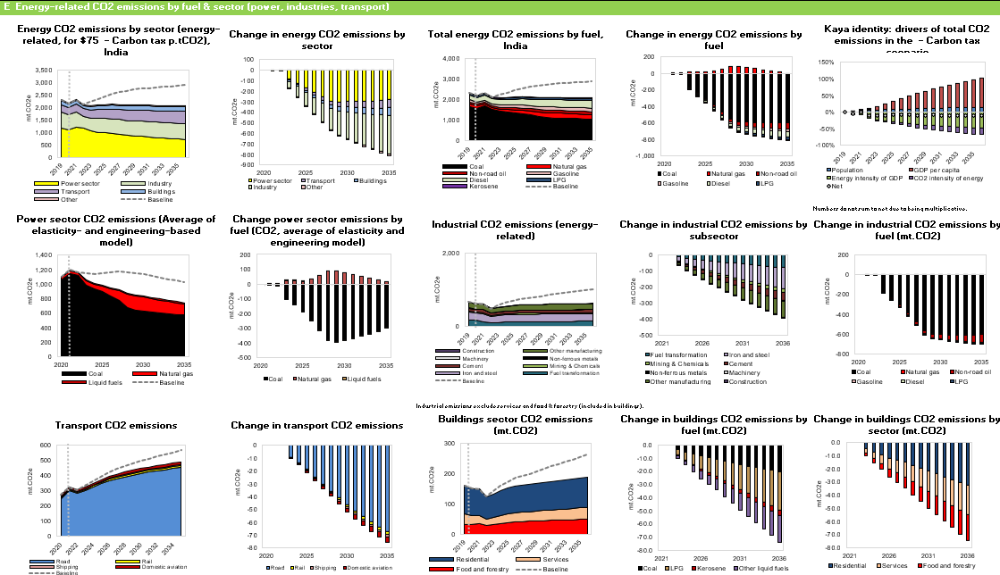

1 User Guide and Climate Policies in CPAT
This document provides guidance to the user on how to use and navigate CPAT and details the various climate policies available. In particular, Section 1.1 presents the different climate policies in CPAT. Section offers a quick start guide of CPAT in which the user can rapidly assess a climate policy via the dashboard. Section 1.2 presents the quick start guide of CPAT. For more in-depth understanding and use of CPAT and the different modules, Section 1.3 describes the different tabs – including the dashboard – of the CPAT tool and how to navigate through them. It also presents the Multiscenario Tool, which can be used to run CPAT for several countries and/or several scenarios. Section 1.4 provides CPAT’s countries coverage. Finally, Section 1.5 presents the list of parameters of CPAT.
1.1 What climate policies can be assessed using CPAT?
1.1.1 Carbon Pricing Policies
The table below summarizes the climate policies options available in CPAT. The first column displayed the number corresponding to the policy in CPAT Excel-sheet. The carbon tax, ETS, feebate and energy efficiency regulations are qualified general policies as they cover all sectors. Nevertheless, exemptions can be applied for individual fuels and sectors (with the option to phase out exemptions over time). Other policies are sector- or fuel-specific.
| Number | Policy coverage | Description |
|---|---|---|
| 1 | Baseline | No climate policy implemented, except from those already captured by the prices data (e.g. existing ETS or carbon tax). |
| General policies | ||
| 2 | Carbon tax | This policy represents a carbon tax applied to the supply of all fossil fuels in proportion to their carbon content. It is modeled by adding to the pre-existing tax on a particular fuel a charge equal to the product of the CO2 emissions factor for that fuel and the tax rate on CO2. |
| 3 | ETS | These policies are modeled in a similar way to a tax (CPAT is deterministic and does not capture uncertainty over emissions prices associated with ETSs). That is, CPAT requires the user to estimate the likely price of an ETS and then impose that to find the emissions reduction.1 |
| 4 | Feebates | Feebates provide a revenue-neutral, sliding scale of fees on activities (like power generation) or products (like vehicles). Activities or products with above average emission rates pay a net tax; activities or products with below average emission rates get net revenues. |
| 5 | Energy efficiency regulations | These policies reduce the emissions or energy intensity of a sector but without the same demand response (e.g., reductions in VKT) as under carbon pricing because they do not involve the pass through of carbon tax revenues (or allowance rents) in higher prices (e.g., for electricity or gasoline) – they also produce a partially offsetting increase in emissions through the rebound effect. |
| Fuel or sector-specific policies | ||
| 6 | Coal excise | The coal excise tax is a carbon tax (in the sense of it being defined per ton CO2) only on coal. |
| 7 | Road fuel tax | Taxes imposed on all fuels in the road transport sector. |
| 8 | Electricity emissions tax | This policy imposes a carbon tax on the electricity sector. |
| 9 | Power feebate | This policy covers power supply feebates if the engineer model is selected and covers power usage feebates if the elasticity model is selected. |
| 10 | Electricity excise | This policy translates into a tax per kWh of electricity used. The tax is set via the standard carbon tax interface. The tax in $/tCO2 is mapped to one per kWh using the year one emission factor as a conversion factor. |
| 11 | Vehicle fuel economy | This imposes shadow prices (similar to a feebate) in the vehicle sector. |
| 12 | Residential efficiency regulations | Similar to the energy efficiency regulations, but it only applies to the residential sector. |
| 13 | Industrial efficiency regulations | Similar to the energy efficiency regulations, but it only applies to the industrial sector. |
1.1.2 Fossil Fuel Subsidy Reform Policies.
In addition to these policies, CPAT allows the user to phase out fossil fuel subsidies and reform regulated prices. See the relevant sections below.
1.1.3 Power Sector Policies
The power sector model contains policies that adjust the cost of capital, adjust Power Purchase Agreements etc. See the relevant sections below.
1.2 Quick Start Guide: Climate Policy Assessment Tool (CPAT)
Welcome to CPAT! This guide aims to show you how to use CPAT, give you an idea of some common issues, and indicate CPAT’s data needs.
What is CPAT? CPAT is a tool for analyzing the impacts of carbon pricing and fossil fuel reforms along several economic and non-economic dimensions.
Opening CPAT: CPAT is a spreadsheet-based tool. You need Excel 2016 or later. Since CPAT is a relatively large spreadsheet, please close other apps. Please ensure ‘Automatic Calculations’ are turned on (File > Options > Formulas).
Navigating CPAT: Please, navigate first to the Dashboard tab.
1.2.1 Input: Country and Proposed Policy Trajectory
Policy Input Area: At the top left, you see various input cells. The yellow cells are user-editable. Categorical cells can be altered by clicking the small down arrow. By clicking on the cell which currently shows Carbon tax, you can select a different carbon pricing policy (e.g., an ETS), which comes with sectoral exemptions pre-set. All policies are defined by the carbon price. The carbon price trajectory is defined by the introduction date (here 2022), the start level (here $50/tCO2), the target level of the carbon price (here $75/tCO2), and the year that this target level will be met (here 2030).
Carbon Price Trajectory: To check that your suggested carbon tax is in place, please see the policy strength graph under Key inputs and outputs. On default settings, the policy is extended linearly beyond the end date. The dotted lines in the left-hand graph show the recommended range for a carbon price recommended by the High-level Commission on Carbon Pricing. The right-hand graph shows the policy’s coverage, including any exemptions (see later for defining exemptions)
1.2.2 Output: Emissions, Revenues, and Co-Benefits
The main outputs are shown under Key inputs and outputs in Panel B. From the left, these graphs show:
GHG emissions relative to baseline (dashed line) & NDC target (dotted horizontal line)
Fiscal revenues (before recycling of funds)
Impact on projected GDP growth
Impacts on households (note: only countries for which household data are available)
Co-benefits: averted air pollution & road accident deaths
Total monetized benefits from the policy
1.2.3 Sense-Checking
The CPAT team is constantly working to keep CPAT up to date, but CPAT is not bulletproof. You should run a few sense-checks as described below. Some of these checks relate to the reliability of input data. Many CPAT users can access national data sources. For continuous improvement of the tool, we would very much appreciate it if such data sources could be shared with us in case data is either missing or substantively different from what is currently in CPAT.
| Check 1: Start by ensuring that the graphs show and update when you change carbon price inputs (i.e., there should be no errors in panel B: all graphs should show except, for some countries, the fourth graph on the impact on households). |
Defaults for parameters: Click the + button for advanced settings.
This expandable panel contains a wide range of parameter settings and adjustments.
Default parameters are indicated with an asterisk (e.g., ‘Base*’). Suppose you change a parameter away from its default setting. In that case, the color changes from yellow to orange. An indicator at the bottom of the ‘Miscellaneous’ section indicates the number of parameters that have departed from default values.
| Check 2: Check how many defaults are different from expected. For default use, the line at the bottom of the Miscellaneous row should be blank/invisible. |
| Example of all settings set to default values | Example of two settings NOT set to default values |
|---|---|
 |
1.2.4 Exemptions
One can exempt any fuels and sectors from the carbon tax (if unticked). So, if, e.g., Kerosene and Cement are unticked, all Kerosene is exempted (independent of the sector), and all Cement energy use is exempt (independent of fuel).
| Check 3: Ensure that all checkboxes are ticked for full policy coverage (recommended) or unticked as desired. |
1.2.5 Phase-out exemptions, subsidies, and revenue recycling
On the right-hand side at the top of the dashboard, the user can change settings relating to the phase-out of exemptions, price controls, and subsidies. It also includes supplementing the policy with renewable energy subsidies and the use of revenues. For revenue recycling, there are five options: labor tax reductions, corporate tax reductions, public investment, current spending, and compensatory transfers to households.
| Check 4: The phase-out of exemptions, price controls, and subsidies, as well as the use of revenue, should be as desired by the user. |
1.2.6 NDC data
CPAT includes data on countries’ Nationally Determined Contributions (NDCs) under the UNFCCC. The ‘NDCs’ Tab summarizes the NDC baseline data for your country. As countries may be updating their NDCs, please check online in the UNFCCC NDC Registry if the information shown is up to date, and in line with the latest submitted version. If not, please, copy the table, fill it out, and send to the team.
| Check 5: Verify that NDC data are up to date. |
1.2.7 Prices
Panel A under the Mitigation module (macro & energy effects) includes a table showing average fuel prices and tax-induced percentage changes. Price changes depend on carbon content as well as pre-existing price distortions (e.g., subsidies).
Note that a significant increase in the price of coal is expected in many countries, even under a moderate carbon tax. For example, $80/t carbon tax with a coal emission factor at ~0.1 tCO2/GJ would correspond to $8/GJ carbon tax. If baseline (subsidized) coal prices were $2/GJ with the subsidy around $0.5/GJ, prices would increase 400%, even without subsidies phase-out. A more moderate situation is shown in the table to the right for Poland, where we see the price of coal increase by 164.8%.
Prices data quality: Look at the heat map to check the quality of the underlying price data. Information is color-coded (see the legend and suggested actions in the map): green shades mean reliable data sources, and yellow/orange cells mean that the users will have to check and confirm prices data.
Prices data form: if the user believes they have better prices data, they can choose to use ‘manual’ prices in calculations and fill the ‘manual inputs’ tab in CPAT. Also we recommend filling and sending this form to the CPAT team so we can update the global CPAT version accordingly.
| Check 6: Are prices and percentage changes reasonable? |
1.2.8 Distributional consumption effects on households
For distributional results, first, check if household data for your country is already included in CPAT; if not, process your microdata following the Codebook and scripts (3-4 days’ resource commitment); if yes, define how to transfer revenues (drop-down menu under ‘Policy options’); adjust accordingly if red flags appear. If ‘No’ adjustment for behavioral/structural change is selected, the price increases are fully passed on to the consumer, which may overestimate consumption effects (i.e., the tax-induced mitigation effect is not considered). Alternatively, choose to factor in decile-specific, price-driven demand adjustments/elasticities.
Choose whether distributional effects are expressed based on decile-specific mean or median consumption data: While median effects are more representative, some fuels may not be shown if > 50% of households report zero or missing expenses (e.g., due to poor data quality). We recommend that effects not be modeled further than five years out.
| Check 7: Make an informed choice on mean/median representation and modelling results without taking into account reduced prices due to behavioral adjustments. |
1.2.9 Contribution of sources to ambient particulate matter
Does the contribution by sector look reasonable? A “reasonable number” should be above 20% and below 90% for most countries. The sectorial distribution could be compared to country level information, if available. If the contribution does not look appropriate when comparing with local information available, the user can change the modeling approach.

The option “Manual-FASST” will allow the user to input their own information, in “Manual inputs tab”. In this case, the user would need to input the contribution of each sector to ambient PM2.5. The recommended default option is “Avg. iF and LS FASST”, which uses the average between the intake fractions model and the Local study-FASST approach.
| Check 8: Check sectors’ contribution to ambient PM2.5 and adjust modeling approach if needed. |
1.2.10 Road transport co-benefits
In the current version of CPAT, total fatalities from road accidents in 2020 are projected based on 2011-2016 data from World Road Statistics. It is recommended that the user checks the validity of this estimate using local data sources, if available, noting that the underlying assumptions can vary significantly from one data source to another. The user might also want to cross-check “forecasted” total distance driven in 2020 (e.g., around 200 billion vehicle-km for Poland as shown in the left-hand side figure) against national statistics, if available.
| Check 9: Check data validity on road accidents and total distance driven. |
1.2.11 Currency used in CPAT
CPAT is presented in constant US dollars (USD). Monetary variables are presented in CPAT are in USD real terms. CPAT distinguishes between the base year – the first year of model calculations (at the time of writing, 2019) – and the year of real terms constant dollars used (at the time of writing, 2021). These settings are defined in the dashboard around cell G60.
CPAT converts between local currencies and US dollars at year of real terms constant dollars (i.e. 2021) exchange rates, and then uses (projected or historical) US inflation indices to deflate in time. For more information on macroeconomic data sources, please see Appendix A.
1.2.12 Energy Units in CPAT
CPAT uses commonly used units where possible, rather than adopting a fully consistent (SI) approach:
- For primary and final energy consumption, we use thousand tons of oil equivalent (ktoe) per year.
- For power consumption and generation, we use GWh per year (or TWh per year in some graphs).
For prices we use different units depending on the fuel type:
- For coal, natural gas and biomass, we use $/GJ;
- For gasoline, diesel, kerosene and LPG, we use $/liter;
- For crude oil and other oil products we use $/bbl (dollars per barrel); and
- For electricity we use $/kWh.
1.3 In-depth use of CPAT
1.3.1 Using CPAT
1.3.1.1 Running CPAT
CPAT is a large Excel file of about 20Mb in compressed Excel binary (.xlsb) format. Its computational needs are substantial, and you should normally not expect to have other memory-intensive programs open. After changing a policy or other input it should take a few seconds to update (you will need to have calculations turned on). You can tell CPAT is working by the ‘graphs updating’. For example, when you change the country and the carbon price input (e.g. by changing cell I6 of the dashboard), the emissions trajectory (around row 44 of the dashboard) will adjust.
CPAT requires a modern version of Excel (2016 at least) and is tested on PC, rather than the Apple Macintosh version of Excel. You should use the desktop, rather than the web version of Excel.
1.3.1.3 CPAT visual conventions
CPAT adopts various visual conventions to make the model easier to follow and code. User inputs are colored yellow. Calculations are white. CPAT codes are typically in blue. Tan cells (both lighter and darker shades) represent formulae that are different from those around them and so cannot be dragged or dragged-onto. The cover tab describes these visual conventions.
1.3.2 The CPAT dashboard tab
CPAT is controlled by its dashboard which provides the main policy, modelling and parameter inputs, and the main outputs from the policy or policies chosen. The dashboard allows the user to input choices regarding the policy under investigation (such as a carbon tax trajectory, with different options for exemptions and recycling of the revenues, or fossil fuel subsidy reform). The dashboard also has options to allow the user to make different modeling choices (e.g., alternative data sources). The tool produces a series of graphs of the impact of the policy scenarios on several variables, including:
- Policy inputs and headline overall effects;
- Mitigation and energy use (i.e., the reduction in Greenhouse gas (GHG) emissions, changes in energy consumption); macroeconomic and fiscal aggregates (GDP, tax revenues);
- Distributional impacts (per income decile, but also urban/rural, and industrial outputs);
- Air pollution and health (concentration, but also mortality and morbidity); and
- Transport (road fatalities and congestion).
In the dashboard, the policy scenario and the baseline are sometimes shown on the same graph, with the baseline shown with a dashed line.
Many CPAT settings have default values. These are usually denoted by an asterix suffix – e.g. “Yes*“.
1.3.2.1 Policy input area: Country and proposed policy trajectory
At the top left of CPAT, you see various input cells. The yellow cells are user editable. Categorical cells can be altered by clicking the small down arrow. By clicking on the cell which currently shows carbon tax, you can select a different carbon pricing policy (e.g., an ETS), which comes with sectoral exemptions pre-set. All policies are defined by the carbon price. The carbon price trajectory is defined by the introduction date (here 2022), the start level (here $50/tCO2), the target level of the carbon price (here $75/tCO2), and the year that this target level will be met (here 2030).
On the right-hand side at the top of the dashboard, the user can change settings relating to the phase-out of exemptions, price controls, and subsidies. One can exempt any fuels and sectors from the carbon tax (if unticked). So, if, for example, Kerosene and Cement are unticked, all Kerosene is exempted (independent of the sector), and all Cement energy use is exempted (independent of fuel). It is necessary to ensure that all checkboxes are ticked for full policy coverage (recommended) or unticked as desired. It also includes supplementing policies with renewable energy subsidies and the use of revenues. For revenue recycling, there are five options: labor tax reductions, corporate tax reductions, public investment, current spending, and compensatory transfers to households. The phase-out of exemptions, price controls, and subsidies, as well as the use of revenue, should be as desired by the user.
1.3.2.2 Policy inputs panel
The first panel shows the result of the policy inputs. This includes Carbon Price Trajectory: To check that the suggested carbon tax is in place, please see the policy strength graph under Key inputs and outputs. On default settings, the policy is extended linearly beyond the end date. The dotted lines in the left-hand graph show the range for a carbon price recommended by the High-level Commission on Carbon Pricing. The right-hand graph shows the policy’s coverage, including any exemptions (see later for defining exemptions).
There are further graphs in this panel, indicating the use of policy coverage, use of revenue, baseline GDP and energy price assumptions, income and price elasticity assumptions.
The description of both the advanced settings and the settings of the power models are presented in Appendix F - Parameter options in the mitigation module.
1.3.2.3 Overview of policies accounted for in CPAT
CPAT covers carbon pricing, taxes, feebates2, efficiency policies, fossil fuel subsidy reform, and power-sector-specific policies (e.g., Power Pricing Agreement reform). The main carbon pricing and fossil fuel subsidy reform policies are selected in the main dashboard.
1.3.2.4 Economy-wide carbon pricing options in CPAT
CPAT accounts for an extensive list of carbon pricing instruments. These can be selected in the ‘Policy’ box shown below.

1.3.2.4.1 Carbon taxation
This policy represents a carbon tax applied to the supply of all fossil fuels in proportion to their carbon content. It is modeled by adding to the pre-existing tax on a particular fuel a charge equal to the product of the CO2 emissions factor for that fuel and the tax rate on CO2. The carbon tax can be comprehensive in applying to all fuels and sectors, or exemptions can be applied for individual fuels and sectors (with the option to phase out exemptions over time).
To the extent they are passed on, carbon taxes are reflected in higher prices for electricity. The increase in electricity prices has two components: (i) the pure abatement costs which reflect increase in generation costs per unit due to the shifting to cleaner, but costlier, generation fuels; and (ii) the tax on remaining emissions per unit of production (or carbon charges on fossil fuel inputs per unit of production). The second part can be rebated either by a dedicated policy (see power feebate below) or by a modification of a comprehensive carbon tax.
For carbon taxation and for the other comprehensive carbon pricing schemes, the user can define sectoral or fuel exemptions using the check boxes in the main dashboard.
1.3.2.4.2 Emission Trading Systems
These policies are modeled in a similar way to a tax (CPAT is deterministic and does not capture uncertainty over emissions prices associated with ETSs). That is, CPAT requires the user to estimate the likely price of an ETS and then impose that to find the emissions reduction. That said, there is also a ‘goal seek’ functionality which allows one to change the price in order to meet a particular emissions target in 2030. Because CPAT is set up without macros, the actual goal seek needs to be done by hand set up by the user using in-built Excel goal seek or seeker routine.
A scalar adjustment, set at a default value of 0.9, is applied to the emissions price, which however implies a (moderately smaller) behavioral response from the ETS compared with the equivalent carbon tax with the same price. This scalar could represent: (i) exclusion of small emitting firms from an ETS applied downstream to large firms in the power and industry sectors; (ii) higher price uncertainty under an ETS compared with a tax which potentially dampens investment incentives for low-carbon technologies; and (iii) grandfathering of allowances to incumbent firms creating barriers to new entrants and potentially forestalling innovation.
In the dashboard, a goal seek tool is available in order to determine the carbon price matching the emissions target. The goal seek is set around cell Y192 of the dashboard near the panel D of the mitigation section. To use it:
Connect cell I6 (Target level of carbon price) to be equal to call AC192 (so that the carbon tax is in the same location as the emissions);
Define the coverage of the emissions target using the boxes from cell AC194 downwards;
Define the coverage percentage of industry in the target;
Define the percentage reduction or absolute emissions target; and
Modify cell AC192 until cells AB214 and AD214 are as close as possible or set up a goal seek to minimize cell AE214 by changing the target carbon price (cell I6).
The goal seek only works for 2030 emissions and can be used for NDC or for ETS targeting.
Note that CPAT models new ETSs and Carbon Taxes separately from existing ETSs and Carbon Tax. For the European Union countries for example, the existing ETS price are projected forward: the growth rate in this projection can be set in the dashboard. It should also be noted that new ETSs are modeled as a sector being ‘in’ or ‘out’, whereas existing ETSs use an aggregated percentage of industry and power based on aggregated coverage data. When a sector is partly included, the carbon price is proportionally reduced by the coverage proportion and the reduced carbon price is applied to the whole sector.
1.3.2.4.3 Feebates
In their pure form, feebates provide a revenue-neutral, sliding scale of fees on activities (like power generation) or products (like vehicles). Activities or products with above average emission rates pay a net tax; activities or products with below average emission rates get net revenues. When a feebate is constructed by a carbon tax plus a rebate based on output (e.g., kWh electricity produced, steel produced, etc.) this is called Output Based Rebating (OBR). But there are other feebates differing from this form, for example when the feebate is on the initial purchase decision, rather the ongoing use (e.g., in the case of vehicles).
In most cases, feebates are modeled through shadow prices. Shadow prices are modeled not by a change in prices per se but rather a price-like adjustments to energy use equations. These shadow prices affect the efficiency channel of the energy use (typically about half the overall price-based effect) but not the usage channel.
Power supply feebates are modeled as a rebated carbon tax (i.e. a carbon tax that only increases power prices through pure abatement costs, not the cost of emissions).
1.3.2.5 Sectoral carbon pricing and taxation policies
Coal excise tax. The coal excise tax is a carbon tax (in the sense of it being defined per ton CO2) only on coal.
Electricity emission tax. This imposes a carbon tax on the electricity sector.
Electricity excise. This is a tax per kWh of electricity used. We set the tax via the standard carbon tax interface. The tax in $/tCO2 is mapped to one per kWh using the year one emission factor as a conversion factor. However, this is only a tax on end users of electricity, it does not distinguish between different ways of generating electricity, incentivizing only electricity demand and not the composition of electricity supply.
Power feebate. This policy covers power supply feebates if the engineer model is selected and covers power usage feebates if the elasticity model is selected.
Vehicle fuel economy. This imposes shadow prices (similar to a feebate) in the vehicle sector.
Road fuel tax. Taxes imposed on all fuels in the road transport sector.
Sectoral fossil fuel excise taxes. These can be modeled by the user, using this setting in the dashboard. This allows the user to set sector- and fuel-specific carbon taxes.3
The actual sectoral-fuel tax rates are set in the ‘Manual Inputs’ tab.
1.3.2.6 Regulations and subsidies
Energy efficiency regulations. CPAT can model CO2 emission rate standards per kWh of power generation, per unit of production for individual industries, or per vehicle kilometers traveled (VKT) for vehicles, or energy efficiency standards for electricity demand, and energy use in the industry, transport, and building sectors. These policies reduce the emissions or energy intensity of a sector but without the same demand response (e.g., reductions in VKT) as under carbon pricing because they do not involve the pass through of carbon tax revenues (or allowance rents) in higher prices (e.g., for electricity or gasoline) – they also produce a partially offsetting increase in emissions through the rebound effect. In particular, CPAT focuses on residential and industrial efficiency regulations.
Clean technology subsidies. Subsidies for renewable generation are modeled in CPAT by a subsidy providing a proportionate reduction in the per unit generation cost for renewables. Subsidies for electric vehicles (EV) are not explicitly modeled in CPAT.
1.3.2.7 Fossil fuel subsidy reform and regulated price reform
CPAT includes extensive capabilities to reform fossil fuel subsidies. For each form of subsidy (i.e., producer-side and consumer-side) one can select the phase out check box and then the number of years to phase out that subsidy. CPAT also includes some estimations of price controls, which can also be phased out (although there are interaction effects so doing both at the same time is not advised). We recommend the default assumptions for fossil fuel subsidies to be checked and/or replaced by the user (user defined subsidies are defined in the manual inputs tab and the dashboard or mitigation tab – the dom_prices tab contains the default assumptions on prices and subsidies). For more information, see the Section Fuel prices, taxes and subsidies and Sub-Section Fiscal revenues of this chapter. Note that whether fossil fuel subsidy reform is included in the baseline is in the advanced settings. The user should check the following setting:
1.3.2.8 Power sector-specific policies
CPAT has the capability to adjust the maximum rate of renewable scale up. This is set for default to 2% for wind and 2% for solar, meaning that we could add (gross of retirements) additional generation equal to 2% of the total for each generation type. For many countries, this growth rate is too ambitious, and a tighter cap will be needed. On the other hand, more ambitious renewables policies could lead to this cap being loosened. This constraint is the same in the baseline and the policy scenario.
CPAT includes the ability to set the proportion of fossil-fueled generation that is covered by PPAs and to model the reform of those PPAs by subjecting them to market costs (including carbon pricing).
CPAT can choose which generation types are investible or not. The user has four options: ‘yes’ (i.e. invests according to cost), ‘no’ (i.e. does not invest in this technology type), ‘if present’ (i.e. invests if this option is present) and ‘manual’ (i.e. capacity additions are set in manual inputs).
Thus, CPAT allows one to phase out any power generation type (preventing any new investment being made). CPAT also by default allows retirement of coal power driven by carbon pricing and allows the user to set the proportion of coal power subject to such retirement (by default 80%).
CPAT also has the capacity to adjust the financial characteristics of the power sector (cost of capital, etc.). These settings, both for the baseline and the policy scenario, are set in the power settings part of the dashboard. The user can also set the default costs of capital for each income-level. Those settings are in the ‘Power’ tab.
CPAT by default has a power sector storage requirement which imposes the marginal system cost of needed storage on new variable renewable energy investment. The storage includes short- and long-term components. The latter component is highly uncertain, and the user is encouraged to check and confirm these settings.
1.3.2.9 Other policies
Other policies are not included in CPAT at this point. These include public investments (e.g., in smart grids or public transportation), low carbon fuel standards, biofuel mandates, building codes, incentives for specific technologies (e.g., geothermal power, nuclear, carbon capture and storage), emission rate policies for non-road vehicles, measures for extractive industries (e.g., moratoria on extraction, charges on production or fugitive emissions), and mitigation instruments beyond the energy sector. Broader policies to promote R&D into critical technologies are also beyond the scope of CPAT.
1.3.2.10 Metrics for comparing policies
The CPAT Dashboard provides a series of results that can be used to compare policies across different dimensions. The main metrics are described below.
CO2 emissions. CO2 emissions are given by the consumption of each fossil fuel product, aggregated across sectors, multiplied by the CO2 emissions factor for that fuel product, and then aggregated across different fossil fuel products.
Revenue. Revenues from carbon mitigation policies are calculated net of indirect changes in revenues (or outlays) from pre-existing energy taxes (or subsidies). Direct revenues from carbon pricing are simply the carbon price times the CO2 emissions to which they are applied and, in the case of ETSs, the fraction of allowances that are auctioned (rather than freely allocated). Revenues from pre-existing energy taxes are the product of the prior fuel tax rate (which is negative in the case of fuel subsidies) and the fuel consumption to which they are applied, aggregated across fuels and sectors, plus the product of any electricity tax and the electricity consumption to which it applies. Indirect revenue losses from carbon pricing are the difference between revenues from pre-existing energy taxes before and after carbon pricing. Similarly, revenues from new, or increases in existing, energy taxes are the tax increase times the fuel or electricity to which the increase applies, net of indirect revenue changes from pre-existing energy taxes.
For regulations and revenue-neutral feebates there is no direct revenue, though there is generally an indirect revenue loss as these policies erode bases for pre-existing energy taxes. For renewable and clean technology subsidies, there is a direct revenue loss equal to the product of the subsidy rate and the base to which it applies plus indirect revenue losses from pre-existing energy taxes.
Externalities. CPAT estimates externalities due to improved human health (because of reduction in air pollution), reduced road accidents, reduced travel time and reduced road maintenance costs. Please refer to the Air Pollution and Transport chapters for more information on the externalities calculation.
Distributional effects. CPAT also offers an incidence analysis about the consumption effects that household could experience after a carbon pricing policy. The details can be consulted in the Distribution chapter.
GDP Effects. GDP growth will be affected by carbon pricing and the total impact will depend on how the revenues are used and other assumptions and parameters used in CPAT. Please refer to the Output section for details.
Climate benefits. The climate benefits are linked to the GHG emission reductions that can be achieved with a policy and the social cost of carbon. For details on emissions calculations and the social cost of carbon in CPAT, please refer to Chapter 3 on the Mitigation Methodology.
Using the previous metrics, the Section Monetized welfare benefits discusses the estimation of the monetized domestic environmental costs from fuel use. The domestic environmental co-benefits of mitigation policies are calculated by the induced reductions in use of a fuel product in a particular sector, multiplied by the corresponding domestic environmental cost per unit, and aggregated across sectors and fuels. Efficiency costs of policies reflect losses in producer and consumer surplus in fossil fuel markets, which in turn correspond to areas under marginal abatement cost schedules – they can be interpreted as the annualized costs of using cleaner, but costlier technologies, and of reducing energy consumption below levels households would otherwise prefer. Efficiency costs are calculated using applications and extensions of long-established formulas in the public finance literature (e.g., Harberger, 1964) based on second-order approximations. These formulas can be applied with data on the size of tax distortions in fuel and electricity markets, any induced quantity changes in markets affected by these distortions (an output from the model), and any new source of price distortion created by carbon policies.

1.3.2.11 Headline projected effects panel
The main outputs are shown under Headline projected effects, in Panel B in CPAT Dashboard. Starting from the left, these graphs show:
- GHG emissions relative to baseline (dashed line) & NDC target (dotted horizontal line);
- Fiscal revenues (before recycling of funds);
- Impact on projected GDP growth;
- Impacts on households (note: only countries for which household data are available);
- Co-benefits: Averted air pollution & road accident deaths; and
- Total monetized benefits from the policy.
1.3.2.12 Advanced settings
Advanced settings can be defined throughout the Dashboard, related to the different CPAT modules. The settings are displayed by clicking the + button to expand.
For instance, for the Mitigation module, the first panel of advanced settings is around row 16 and includes key policy options, sources for key inputs, uncertainty adjustments and miscellaneous effects.
The mitigation module also has wide range of advanced options which are covered around row 58. For example, the user has an option to specify existing ETS permit price growth for future years, can choose to apply the same VAT tax rate in the residential and transport sectors if it is different from the general VAT in the economy, adjust social cost of carbon tax and more.
The dashboard includes advanced parameter options for the power models around row 109. This includes, for example, information on the proportion of fossil-fueled generation that is covered by power purchase agreements (PPAs), an important measure of how inflexible the power sector is to prices due to market structure factors. To access this panel, click the plus sign to ungroup.
1.3.2.13 Mitigation module: Advanced settings and detailed results
The mitigation module panels show the following results:
- Energy baseline externalities, prices, consumption, and targets;
- Power sector results;
- Fiscal, macroeconomic, and welfare effects;
- GHG emissions and short-lived climate pollutants (SLCPs); and
- Energy-related CO2 emissions by fuel & sector (power, industries and transport).
The baseline externalities, prices, consumption and targets panel contain information about estimated externalities, energy price changes induced by the policy, and projected and efficient price change. One can select the ‘year of interest’ in the top right of the panel. The lower row shows sectoral and fuel energy consumption changes (the baseline is with the dotted line), changes induced by the policy and national sectoral NDC targets.
The CPAT power panel contains information about the electricity system. The graphs are shown below. One can select the ‘year of interest’ in the top right of the panel. CPAT has two power models: the elasticity-based and technoeconomic (engineer) models, with the default set to the average between the two. However, the more CPAT can be tailored by the user to country-specific settings, the more the user is encouraged to use the ‘engineer’ choice (this is selectable on cell L24 in the original ‘more detailed options’ panel).

The fiscal effects contain notably the multipliers used in CPAT (bottom left) - the default is MFmod multipliers. The bottom middle shows the net GDP effects in time.
The emissions panel shows a deep dive into GHG emissions.
The energy related emissions show a deep dive into CO2 and other energy-related emissions including the Kaya identity which disaggregates the drivers of emissions changes.

1.3.2.14 Distributional consumption effects on households
For distributional results, first, check if household data for your country is already included; if yes, define how to transfer revenues (dropdown in ‘Policy options’); adjust accordingly if red flags appear. If ‘No’ adjustment for behavioral/structural change is selected, the price increases are fully passed on to the consumer which may overestimate consumption effects (i.e. tax-induced mitigation effect is not considered). Alternatively, choose to factor in decile-specific price-driven demand adjustments/elasticities.
Choose representation of means or medians: while median effects are more representative, some fuels may not be shown if >50% of households report zero or missing expenses (e.g., if poor data quality). Make an informed choice on mean/median representation and modelling results with/out taking into account reduced prices due to behavior adjustments.
For more information, please see the distribution chapter of CPAT documentation.
1.3.2.15 Air pollution (and associated health effects) results
The recommended default option to estimate concentration changes is “Avg. iF and LS FASST*” or “Local study-FASST”. See the air pollution methodology chapter for more details on what the different options entail. Is important to check the sectors’ contribution to ambient PM2.5 and adjust modeling approach if needed.
As in the other sections of CPAT, the cells in yellow can be modified by the user. For instance, the user can input a local Value of the Statistical Life to value air pollution externalities from fossil fuels.
Some additional parameters can be modified in the “Manual inputs” tab. A link to this tab is at the end of the air pollution settings in the Dashboard. In that tab, the user can input source apportionment information, that reflects the sectoral contribution to ambient PM2.5 in the analyzed country. Notice that for CPAT to use that manual input, the “Emissions to concentrations, PM2.5” parameter needs to be set to “Manual-FASST”.
For more information, please see the air pollution chapter from CPAT documentation.
1.3.2.16 Transport co-benefits (road accidents, congestion, and road damage)
The group of panels shows the results for transport co-benefits. This includes results for distance traveled, fatalities on the road, congestion, fuel prices and the statistical relationship between fuel prices, accidents and congestion.
For more information, please see the transport chapter of this documentation.
1.3.3 Manual inputs tab: Tailoring CPAT
CPAT is designed to be able to be run ‘off the shelf’. Nevertheless, the default settings will usually need to be checked and tested for the country context. In particular:
- The prices and subsidy information should be checked and, if needed, augmented on the manual settings tab.
- The user can set the investment trajectory in the power sector, both in the baseline and the policy scenarios. For more information, please see the CPAT quick-start guide.
Most of these tailored inputs are stored in the manual inputs tab. This tab also gives the option to add any combination of additional fuel- and sector-specific taxes (excise reform section).
1.3.4 Navigating other CPAT tabs
Each module is divided into sections (dark green) and subsections (light green). As mentioned earlier, subsections can be ‘grouped’ so only one line of results are shown, or ‘ungrouped’ so that all calculations are shown. To group, click the small ‘1’ at the top left of the main window. To ungroup one subsection, click the small + sign on the left-hand side. Note that in CPAT, codes have the following format:
Country.Tab.Variable.Sector.FuelType.Other.SubscenarioNumber4
Users may wish occasionally to change the coding of CPAT itself. In this case it is noted that CPAT is designed in such a way that the whole of part C (the baseline scenario) can be copy-pasted into part D (the policy scenario) or vice versa. It however important not to copy the first, dark green row of part C (D) which designates the baseline (the policy implemented). Note also that due to computational limitations, for the Mitigation module, part C should be copy-pasted into part D, subsection by subsection, rather than all at one time. More information on coding or modifying CPAT is available on request.
To ensure CPAT is copy-pastable, three principles must be covered:
- There should be no references between C and D
- References to other sections than C and D or to other tabs must be row-absolute (e.g. ’MTInputs!$F$212’)
- References within a submodule (C) to other parts of C must be row-relative (without a $ before the row number – e.g. ‘MTInputs!F$212’)
- References in the results are referring to C and D must use an ‘Index-match’ based on the CPAT code. This means that the user should:
- Define a helper row (or column if needed) number, using the MATCH function in Excel based on the CPAT code.
- Use the INDEX function in Excel.
1.3.4.1 The Mitigation tab
The following figure shows the organization of the mitigation module.
The mitigation module is divided into several sub-sections:
- Part A: Overview.
- Part B: Key Assumptions and inputs. This section comprises assumptions used and data inputs (i.e. macro data, elasticities, energy consumption, domestic and international prices, etc.)
- Parts C and D: The main model repeated twice (baseline and policy – usually a carbon tax). In particular, part C holds for the baseline scenario and part D for the policy scenario. These parts are identical, except that part D accounts for the policy implemented. These sections build the two power models (based on prices inputs) and calculates the energy use across the main sectors (i.e. industry, building, transport, and other energy use), as well as the associated emissions. The sections also provide estimates on the fiscal revenues resulting from the policy in place and associated GDP effects.
- Parts E and F: The results areas. Finally, parts E and F summarize all the results to create the graphic visualization. This area cannot be ‘grouped’ as then otherwise parts of graphs that rely on these data would not be visible.
1.3.4.2 The Distribution tab
The organization of the Distribution module is shown in Figure 1.43.

The Distributional effects module is divided into the following sections:
- A: Module overview:
- A.I. Description. This sub-section provides a brief flow chart-style outline of the Distribution module (see Figure 1.44):
A.II. Country coverage. This sub-section lists the WB member countries, for which analytical outputs are available in the CPAT Distribution module.
B: Key Assumptions and inputs. This section includes: 1) module assumptions, e.g., years of reference, macro variables, scaling factors for calibration to national accounts data, etc. (sub-section B.I); 2) sector- and energy product-specific percent price changes from the Mitigation module used in the analysis (sub-sections B.II and B.III); and 3) cost/price pass-through coefficients (sub-section B.IV.).
C: Climate policy scenario (e.g., Carbon tax). This section includes the distributional effects (consumption incidence) analysis and related calculations. Specifically, it is divided into: 1) calculations of the definitive energy and non-energy price changes used in the analysis (sub-section C.I); 2) various adjustments to the incidence effects analysis, based on user inputs (e.g., decile/product-specific price elasticities of demand, behavioral and structural change adjustment, etc.) (sub-section C.II); 3) household budget shares for fuel (sub-section C.III) and non-fuel (sub-section C.IV) consumption; 4) incidence effects from fuel (sub-section C.V), non-fuel (sub-section C.VI) and total (sub-section C.VII) consumption; 5) calibration of data to national accounts (sub-section C.VIII); 6) effects on inequality (sub-section C.IX);
- compensation schemes via transfers (sub-section C.X); and 8) compensation schemes via personal income tax (PIT) reductions (sub-section C.XI).
D: Outputs for charts. This section extracts results for the various charts available in the Dashboard. It comprises of: 1) various chart labels (sub-section D.I); 2) vertical (between-decile) consumption incidence results expressed in “relative terms”/percent of household consumption (sub-section D.II); 3) vertical (between-decile) incidence results expressed in “absolute terms”/local currency units (LCU) (sub-section D.III); 4) horizontal (within-decile) incidence results expressed in “relative terms”/percent of household consumption (sub-section D.IV); 5) percent of climate policy revenues needed to fully compensate given deciles (sub-section D.V); and 6) percent increases in industry/firm costs by sector (sub-section D.VI). This area should remain ‘ungrouped’ (or otherwise unhidden), to allow for visualization of the relevant charts in the Dashboard.
1.3.4.3 The Air pollution tab
The Air pollution module is divided into several sub-sections, as presented in Figure 1.45.

- Part A: Description or Overview. The first part of the module contains an overview of the contents in the tab. This tab receives as input energy consumption and emissions from the Mitigation module. Using those inputs (among other inputs), this module produces ambient concentrations of fine particulate matter and ozone, health impacts and economic impacts of pollution.
- Part B: Key assumptions and inputs. This section contains all the calibration options available for the air pollution module, inputs from the Mitigation module, and other inputs required for calculations. In general, in this section are included calculations that will feed both the baseline and carbon tax calculations, such as the health effects relative risk functions, baseline incidence rates, value of the statistical life, among others (see Figure 1.45 (a)).
- Part C: Baseline. This section contains all the calculations for the baseline scenario, including ambient concentrations of PM2.5 and O3, relative risks, population exposed to pollution, the attributable burden of pollution (mortality and morbidity) and working days lost due to pollution.
- Part D: Carbon price policy. This section contains all the calculations for the policy scenario selected in the Dashboard tab. Sections D and C have the exact same calculations. As in the Mitigation tab, section C can be copy-pasted into section C.
- Part E: Results for other modules. The Road Transport module in CPAT uses some of the calculations made in the Air pollution module, such as daily earning from workers, the value of the Statistical life and population above 15 years old. Those variables are in this section.
- Part F: Results for charts. In this section are located some additional calculations regarding the difference between metrics in the baseline and in the carbon price scenarios. All the graphs included in the Dashboard, related to the Air pollution module, are feed by data from this section.
- Part G: Equations and notes. This section includes some of the equations used inside the air pollution module. They are numbered and when they are used inside the module, they are referenced using the equation number.
1.3.4.4 The Transport tab
The Transport tab includes the road transport modelling for CPAT. The module is divided into several sub-sections, following a similar structure than the other CPAT modules, as presented in Figure 1.47.
- Part A: Description. The first part of the module contains an overview of the contents in the tab. This tab receives as input the changes in fuel prices from the Mitigation module. Using those inputs (among other inputs), this module produces the number of fatalities from road accidents, additional travel time due to congestion and road damages.
- Part B: Key assumptions and inputs. This section contains all the calibration options available for the Road Transport module, country characteristics and elasticities.
- Part C: Baseline. This section contains all the calculations for the baseline scenario (accidents, travel time, road damage, among others) and fuel prices for the baseline, from the Mitigation tab.
- Part D: Carbon price policy. This section contains all the calculations for the policy scenario (accidents, travel time, road damage, among others) and fuel prices for the policy scenario, from the Mitigation tab. Sections D and C have the exact same calculations. As in the Mitigation tab, section C can be copy-pasted into section C.
- Part E: Results for other modules. In this section are results from the Road Transport module that will be used in other modules. For instance, the welfare metrics calculated in the Mitigation module are using the transport externalities from this section.
- Part F: Results for charts. In this section are located some additional calculations regarding the difference between metrics in the baseline and in the carbon price scenarios. All the graphs included in the Dashboard related to the Road Transport module using the metrics in this section.
1.3.4.5 Data sources tab
CPAT data sources and terms and conditions are shown here in the Data sources tab.
1.3.4.6 MTInputs tab
This tab contains the assumptions and parameters that are used in the calculations in CPAT. This means that the configuration observed in the Dashboard (explained in this document) is not directly used in the calculations. Rather, the settings from this tab, MTInputs, are used depending on the CPAT running mode. CPAT can be run in three different modes:
- It can be run ‘from the dashboard’ with user selected settings.
- It can be run using fully default settings. To change this, please see element 4 in the main policy input area and select ‘Defaults’.
- It can be run in multi-country, multi-policy mode. To select this, use the ‘Multiscenario Tool’, described in section 1.3.5, which is a separate spreadsheet.
All of these three sets of parameters ‘flow through’ MTinputs tab, which shows the comprehensive parameter set used for calculation in CPAT.
1.3.4.7 MTOutputs tab
As it was explained in the previous section, CPAT can be run in a “multi-country, multi-policy” mode. When this is the case, the tab MTOutputs stores the results that will be exported to the Multiscenario Tool, described in the following section. This tab contains a series of indicators, reflecting the main results from each CPAT module. A view of this tab is presented in the next figure.
1.3.5 The Multiscenario Tool (MT)
CPAT run in standalone mode relates to a single country with two scenarios: the baseline and a policy scenario. CPAT can also be run in multiscenario mode, meaning for many countries and/or many scenarios. More information about the multiscenario tool is available on request.
1.4 Country coverage
CPAT currently covers 192 countries. The table below presents the list of countries and indicates whether the country is covered by CPAT (with ‘Y’ = Yes, indicating the country being covered by CPAT). If the country is not covered, an explanation is provided to detail what are the missing information.
| Country code | Income Group | Country | Region | Coverage | Distribution |
|---|---|---|---|---|---|
| AFG | LIC | Afghanistan | South Asia | Y | |
| ALB | UMIC | Albania | Europe & Central Asia | Y | |
| DZA | UMIC | Algeria | Middle East & North Africa | Y | |
| ASM | UMIC | American Samoa | East Asia & Pacific | Y | |
| AND | HIC | Andorra | Europe & Central Asia | Macro data not available (employment; emissions data) | |
| AGO | LMIC | Angola | Sub-Saharan Africa | Y | |
| AIA | UMIC | Anguilla | Latin America & Caribbean | Spurious results’ lack of energy consumption data | |
| ATG | HIC | Antigua and Barbuda | Latin America & Caribbean | Y | |
| ARG | HIC | Argentina | Latin America & Caribbean | Y | Y |
| ARM | UMIC | Armenia | Europe & Central Asia | Y | |
| ABW | HIC | Aruba | Latin America & Caribbean | Y | |
| AUS | HIC | Australia | East Asia & Pacific | Y | |
| AUT | HIC | Austria | Europe & Central Asia | Y | Y |
| AZE | UMIC | Azerbaijan | Europe & Central Asia | Y | |
| BHS | HIC | Bahamas, The | Latin America & Caribbean | Y | |
| BHR | HIC | Bahrain | Middle East & North Africa | Y | |
| BGD | LMIC | Bangladesh | South Asia | Y | Y |
| BRB | HIC | Barbados | Latin America & Caribbean | Y | |
| BLR | UMIC | Belarus | Europe & Central Asia | Y | |
| BEL | HIC | Belgium | Europe & Central Asia | Y | Y |
| BLZ | UMIC | Belize | Latin America & Caribbean | Y | |
| BEN | LIC | Benin | Sub-Saharan Africa | Y | |
| BMU | HIC | Bermuda | North America | Macro data not available (GDP per capita - real (constant prices); employment) | |
| BTN | LMIC | Bhutan | South Asia | Y | |
| BOL | LMIC | Bolivia | Latin America & Caribbean | Y | Y |
| BIH | UMIC | Bosnia and Herzegovina | Europe & Central Asia | Y | |
| BWA | UMIC | Botswana | Sub-Saharan Africa | Y | |
| BRA | UMIC | Brazil | Latin America & Caribbean | Y | Y |
| VGB | HIC | British Virgin Islands | Latin America & Caribbean | Macro data not available (GDP indicators, employment and population, exchange rate) | |
| BRN | HIC | Brunei Darussalam | East Asia & Pacific | Y | |
| BGR | UMIC | Bulgaria | Europe & Central Asia | Y | Y |
| BFA | LIC | Burkina Faso | Sub-Saharan Africa | Y | |
| BDI | LIC | Burundi | Sub-Saharan Africa | Y | |
| CPV | LMIC | Cabo Verde | Sub-Saharan Africa | Y | |
| KHM | LMIC | Cambodia | East Asia & Pacific | Y | |
| CMR | LMIC | Cameroon | Sub-Saharan Africa | Y | |
| CAN | HIC | Canada | North America | Y | Y |
| CYM | HIC | Cayman Islands | Latin America & Caribbean | Y | |
| CAF | LIC | Central African Republic | Sub-Saharan Africa | Y | |
| TCD | LIC | Chad | Sub-Saharan Africa | Y | |
| CHI | HIC | Channel Islands | Europe & Central Asia | Macro data not available (GDP indicators, employment, population, emissions); problem with externalities. | |
| CHL | HIC | Chile | Latin America & Caribbean | Y | Y |
| CHN | UMIC | China | East Asia & Pacific | Y | Y |
| COL | UMIC | Colombia | Latin America & Caribbean | Y | Y |
| COM | LIC | Comoros | Sub-Saharan Africa | Y | |
| COD | LIC | Congo, Democratic Republic of the | Sub-Saharan Africa | Y | |
| COG | LMIC | Congo, Republic of | Sub-Saharan Africa | Y | |
| CRI | UMIC | Costa Rica | Latin America & Caribbean | Y | Y |
| CIV | LMIC | Côte d’Ivoire | Sub-Saharan Africa | Y | Y |
| HRV | HIC | Croatia | Europe & Central Asia | Y | Y |
| CUB | UMIC | Cuba | Latin America & Caribbean | Y | |
| CUW | HIC | Curaçao | Latin America & Caribbean | Macro data not available (employment, GDP per capita - real (constant prices), problem with externalities; spurious results’ balances issues). | |
| CYP | HIC | Cyprus | Europe & Central Asia | Y | Y |
| CZE | HIC | Czech Republic | Europe & Central Asia | Y | Y |
| DNK | HIC | Denmark | Europe & Central Asia | Y | Y |
| DJI | LMIC | Djibouti | Middle East & North Africa | Y | |
| DMA | UMIC | Dominica | Latin America & Caribbean | Y | |
| DOM | UMIC | Dominican Republic | Latin America & Caribbean | Y | Y |
| ECU | UMIC | Ecuador | Latin America & Caribbean | Y | Y |
| EGY | LMIC | Egypt | Middle East & North Africa | Y | Y |
| SLV | LMIC | El Salvador | Latin America & Caribbean | Y | |
| GNQ | UMIC | Equatorial Guinea | Sub-Saharan Africa | Y | |
| ERI | LIC | Eritrea | Sub-Saharan Africa | Y | |
| EST | HIC | Estonia | Europe & Central Asia | Y | Y |
| SWZ | LMIC | Eswatini | Sub-Saharan Africa | Macro data not available (employment, GDP per capita - real (constant prices); problem with externalities). | |
| ETH | LIC | Ethiopia | Sub-Saharan Africa | Y | |
| FRO | HIC | Faroe Islands | Europe & Central Asia | Macro data not available (GDP indicators, employment); missing externalities; spurious results’ balances issues. | |
| FJI | UMIC | Fiji | East Asia & Pacific | Y | |
| FIN | HIC | Finland | Europe & Central Asia | Y | Y |
| FRA | HIC | France | Europe & Central Asia | Y | Y |
| PYF | HIC | French Polynesia | East Asia & Pacific | Macro data not available (employment, GDP per capita - real (constant prices); problem with externalities). | |
| GAB | UMIC | Gabon | Sub-Saharan Africa | Y | |
| GMB | LIC | Gambia, The | Sub-Saharan Africa | Y | |
| GEO | LMIC | Georgia | Europe & Central Asia | Y | |
| DEU | HIC | Germany | Europe & Central Asia | Y | Y |
| GHA | LMIC | Ghana | Sub-Saharan Africa | Y | Y |
| GIB | HIC | Gibraltar | Europe & Central Asia | Macro data not available (GDP indicators, employment, population); problem with externalities). | |
| GRC | HIC | Greece | Europe & Central Asia | Y | Y |
| GRL | HIC | Greenland | Europe & Central Asia | Y | |
| GRD | UMIC | Grenada | Latin America & Caribbean | Y | |
| GUM | HIC | Guam | East Asia & Pacific | Macro data not available (employment, GDP per capita - real (constant prices); problem with externalities). | |
| GTM | UMIC | Guatemala | Latin America & Caribbean | Y | |
| GIN | LIC | Guinea | Sub-Saharan Africa | Y | |
| GNB | LIC | Guinea-Bissau | Sub-Saharan Africa | Y | |
| GUY | UMIC | Guyana | Latin America & Caribbean | Y | |
| HTI | LIC | Haiti | Latin America & Caribbean | Y | |
| HND | LMIC | Honduras | Latin America & Caribbean | Y | Y |
| HKG | HIC | Hong Kong SAR | East Asia & Pacific | Y | |
| HUN | HIC | Hungary | Europe & Central Asia | Y | Y |
| ISL | HIC | Iceland | Europe & Central Asia | Y | |
| IND | LMIC | India | South Asia | Y | Y |
| IDN | LMIC | Indonesia | East Asia & Pacific | Y | Y |
| IRN | UMIC | Iran | Middle East & North Africa | Y | |
| IRQ | UMIC | Iraq | Middle East & North Africa | Y | |
| IRL | HIC | Ireland | Europe & Central Asia | Y | Y |
| IMN | HIC | Isle of Man | Europe & Central Asia | Macro data not available (employment, GDP per capita - real (constant prices), emissions; problem with externalities). | |
| ISR | HIC | Israel | Middle East & North Africa | Y | |
| ITA | HIC | Italy | Europe & Central Asia | Y | Y |
| JAM | UMIC | Jamaica | Latin America & Caribbean | Y | |
| JPN | HIC | Japan | East Asia & Pacific | Y | |
| JOR | UMIC | Jordan | Middle East & North Africa | Y | |
| KAZ | UMIC | Kazakhstan | Europe & Central Asia | Y | Y |
| KEN | LMIC | Kenya | Sub-Saharan Africa | Y | |
| KIR | LMIC | Kiribati | East Asia & Pacific | Y | |
| KOR | HIC | Korea | East Asia & Pacific | Y | |
| PRK | LIC | Korea, Dem. People’s Rep. | East Asia & Pacific | Macro data not available (GDP indicators, employment); missing externalities. | |
| XKX | LMIC | Kosovo | Europe & Central Asia | Data not available (Historical CO2 & other GHGs emissions). | |
| KWT | HIC | Kuwait | Middle East & North Africa | Y | |
| KGZ | LMIC | Kyrgyz Republic | Europe & Central Asia | Y | |
| LAO | LMIC | Lao P.D.R. | East Asia & Pacific | Y | |
| LVA | HIC | Latvia | Europe & Central Asia | Y | Y |
| LBN | UMIC | Lebanon | Middle East & North Africa | Y | |
| LSO | LMIC | Lesotho | Sub-Saharan Africa | Y | |
| LBR | LIC | Liberia | Sub-Saharan Africa | Y | |
| LBY | UMIC | Libya | Middle East & North Africa | Y | |
| LIE | HIC | Liechtenstein | Europe & Central Asia | Macro data not available (GDP indicators, employment); missing externalities. | |
| LTU | HIC | Lithuania | Europe & Central Asia | Y | Y |
| LUX | HIC | Luxembourg | Europe & Central Asia | Y | Y |
| MAC | HIC | Macao SAR | East Asia & Pacific | Y | |
| MKD | UMIC | Macedonia, FYR | Europe & Central Asia | Y | Y |
| MDG | LIC | Madagascar | Sub-Saharan Africa | Y | Y |
| MWI | LIC | Malawi | Sub-Saharan Africa | Y | |
| MYS | UMIC | Malaysia | East Asia & Pacific | Y | Y |
| MDV | UMIC | Maldives | South Asia | Y | |
| MLI | LIC | Mali | Sub-Saharan Africa | Y | Y |
| MLT | HIC | Malta | Middle East & North Africa | Y | Y |
| MHL | UMIC | Marshall Islands | East Asia & Pacific | Data not available (Historical CO2 & other GHGs emissions). | |
| MRT | LMIC | Mauritania | Sub-Saharan Africa | Y | |
| MUS | UMIC | Mauritius | Sub-Saharan Africa | Y | |
| MEX | UMIC | Mexico | Latin America & Caribbean | Y | Y |
| FSM | LMIC | Micronesia | East Asia & Pacific | Y | |
| MDA | LMIC | Moldova | Europe & Central Asia | Y | |
| MCO | HIC | Monaco | Europe & Central Asia | Macro data not available (employment, GDP per capita - real (constant prices); problem with air pollution externalities). | |
| MNG | LMIC | Mongolia | East Asia & Pacific | Y | |
| MNE | UMIC | Montenegro, Rep. of | Europe & Central Asia | Data not available (Historical CO2 & other GHGs emissions). | |
| MSR | UMIC | Montserrat | Latin America & Caribbean | Data not available (Historical CO2 & other GHGs emissions). | |
| MAR | LMIC | Morocco | Middle East & North Africa | Y | |
| MOZ | LIC | Mozambique | Sub-Saharan Africa | Y | |
| MMR | LMIC | Myanmar | East Asia & Pacific | Y | |
| NAM | UMIC | Namibia | Sub-Saharan Africa | Y | |
| NRU | UMIC | Nauru | East Asia & Pacific | Y | |
| NPL | LIC | Nepal | South Asia | Y | Y |
| NLD | HIC | Netherlands | Europe & Central Asia | Y | Y |
| NCL | HIC | New Caledonia | East Asia & Pacific | Macro data not available (GDP indicators, employment); problem with externalities. | |
| NZL | HIC | New Zealand | East Asia & Pacific | Y | |
| NIC | LMIC | Nicaragua | Latin America & Caribbean | Y | |
| NER | LIC | Niger | Sub-Saharan Africa | Y | |
| NGA | LMIC | Nigeria | Sub-Saharan Africa | Y | |
| MNP | HIC | Northern Mariana Islands | East Asia & Pacific | Macro data not available (employment, GDP per capita - real (constant prices); problem with externalities; balances issues). | |
| NOR | HIC | Norway | Europe & Central Asia | Y | |
| OMN | HIC | Oman | Middle East & North Africa | Y | |
| PAK | LMIC | Pakistan | South Asia | Y | Y |
| PLW | HIC | Palau | East Asia & Pacific | Y | |
| PAN | HIC | Panama | Latin America & Caribbean | Y | |
| PNG | LMIC | Papua New Guinea | East Asia & Pacific | Y | |
| PRY | UMIC | Paraguay | Latin America & Caribbean | Y | |
| PER | UMIC | Peru | Latin America & Caribbean | Y | Y |
| PHL | LMIC | Philippines | East Asia & Pacific | Y | Y |
| POL | HIC | Poland | Europe & Central Asia | Y | Y |
| PRT | HIC | Portugal | Europe & Central Asia | Y | Y |
| PRI | HIC | Puerto Rico | Latin America & Caribbean | Y | |
| QAT | HIC | Qatar | Middle East & North Africa | Y | |
| ROU | UMIC | Romania | Europe & Central Asia | Y | Y |
| RUS | UMIC | Russia | Europe & Central Asia | Y | |
| RWA | LIC | Rwanda | Sub-Saharan Africa | Y | Y |
| WSM | UMIC | Samoa | East Asia & Pacific | Y | |
| SMR | HIC | San Marino | Europe & Central Asia | Data not available (Historical CO2 & other GHGs emissions); Spurious results’ balances issues. | |
| STP | LMIC | São Tomé and Príncipe | Sub-Saharan Africa | Y | |
| SAU | HIC | Saudi Arabia | Middle East & North Africa | Y | |
| SEN | LIC | Senegal | Sub-Saharan Africa | Y | |
| SRB | UMIC | Serbia | Europe & Central Asia | Y | Y |
| SYC | HIC | Seychelles | Sub-Saharan Africa | Y | |
| SLE | LIC | Sierra Leone | Sub-Saharan Africa | Y | |
| SGP | HIC | Singapore | East Asia & Pacific | Y | |
| SXM | HIC | Sint Maarten (Dutch part) | Latin America & Caribbean | Macro data not available (employment, GDP per capita - real (constant prices); historical CO2 & other GHGs emissions; problem with balances). | |
| SVK | HIC | Slovak Republic | Europe & Central Asia | Y | Y |
| SVN | HIC | Slovenia | Europe & Central Asia | Y | Y |
| SLB | LMIC | Solomon Islands | East Asia & Pacific | Y | |
| SOM | LIC | Somalia | Sub-Saharan Africa | Y | |
| ZAF | UMIC | South Africa | Sub-Saharan Africa | Y | |
| SSD | LIC | South Sudan | Sub-Saharan Africa | Data not available (Historical CO2 & other GHGs emissions); Spurious results’ balances issues. | |
| ESP | HIC | Spain | Europe & Central Asia | Y | Y |
| LKA | LMIC | Sri Lanka | South Asia | Y | Y |
| KNA | HIC | St. Kitts and Nevis | Latin America & Caribbean | Y | |
| LCA | UMIC | St. Lucia | Latin America & Caribbean | Y | |
| MAF | HIC | St. Martin (French part) | Latin America & Caribbean | Macro data not available (GDP indicators, employment); historical CO2 & other GHGs emissions; problem with externalities. | |
| VCT | UMIC | St. Vincent and the Grenadines | Latin America & Caribbean | Y | |
| SDN | LMIC | Sudan | Sub-Saharan Africa | Y | |
| SUR | UMIC | Suriname | Latin America & Caribbean | Y | |
| SWE | HIC | Sweden | Europe & Central Asia | Y | Y |
| CHE | HIC | Switzerland | Europe & Central Asia | Y | |
| SYR | LIC | Syria | Middle East & North Africa | Macro data not available (GDP indicators, employment); problem with externalities. | |
| TWN | HIC | Taiwan Province of China | East Asia & Pacific | Y | |
| TJK | LIC | Tajikistan | Europe & Central Asia | Y | |
| TZA | LIC | Tanzania | Sub-Saharan Africa | Y | |
| THA | UMIC | Thailand | East Asia & Pacific | Y | Y |
| TLS | LMIC | Timor-Leste | East Asia & Pacific | Y | |
| TGO | LIC | Togo | Sub-Saharan Africa | Y | |
| TON | UMIC | Tonga | East Asia & Pacific | Y | |
| TTO | HIC | Trinidad and Tobago | Latin America & Caribbean | Y | |
| TUN | LMIC | Tunisia | Middle East & North Africa | Y | |
| TUR | UMIC | Turkey | Europe & Central Asia | Y | Y |
| TKM | UMIC | Turkmenistan | Europe & Central Asia | Y | |
| TCA | HIC | Turks and Caicos Islands | Latin America & Caribbean | Y | |
| TUV | UMIC | Tuvalu | East Asia & Pacific | Spurious results’ balances issues, missing historical CO2 & other GHGs emissions data. | |
| UGA | LIC | Uganda | Sub-Saharan Africa | Y | |
| UKR | LMIC | Ukraine | Europe & Central Asia | Y | Y |
| ARE | HIC | United Arab Emirates | Middle East & North Africa | Y | |
| GBR | HIC | United Kingdom | Europe & Central Asia | Y | Y |
| USA | HIC | United States | North America | Y | Y |
| URY | HIC | Uruguay | Latin America & Caribbean | Y | Y |
| UZB | LMIC | Uzbekistan | Europe & Central Asia | Y | |
| VUT | LMIC | Vanuatu | East Asia & Pacific | Y | |
| VEN | UMIC | Venezuela | Latin America & Caribbean | Macro data not available (GDP indicators) | |
| VNM | LMIC | Vietnam | East Asia & Pacific | Y | Y |
| VIR | HIC | Virgin Islands (U.S.) | Latin America & Caribbean | Macro data not available (employment, GDP per capita - real (constant prices); problem with externalities, balances issues). | |
| PSE | LMIC | West Bank and Gaza | Middle East & North Africa | Macro data not available (employment, GDP per capita - real (constant prices); missing historical CO2 & other GHGs emissions data). | |
| YEM | LIC | Yemen | Middle East & North Africa | Y | |
| ZMB | LMIC | Zambia | Sub-Saharan Africa | Y | |
| ZWE | LIC | Zimbabwe | Sub-Saharan Africa | Y | |
| WORLDAV | World aviation bunkers | World aviation bunkers | Y | ||
| WORLDMAR | World marine bunkers | World marine bunkers | Y |
1.5 Parameters in CPAT
When opening CPAT, the tool will be already configurated using a set of assumptions and parameter values. The following table shows the initial or default configuration in CPAT. Notice that an asterisk represents the recommended default values, that the user can select if unsure about the best assumption to use for a particular country and context.
| Explanation | Code Name | Default |
|---|---|---|
| Carbon pricing: main inputs | ||
|
CPIntro | 2023 |
|
CPLevelStart | 25 |
|
CPLevelTarget | 75 |
|
CPOutro | 2030 |
| Carbon pricing: fuel coverage | ||
|
MCovCoa | TRUE |
|
MCovNga | TRUE |
|
MCovGso | TRUE |
|
MCovDie | TRUE |
|
MCovLpg | TRUE |
|
MCovKer | TRUE |
|
MCovOop | TRUE |
| Carbon pricing: sector coverage | ||
|
MCovPow | TRUE |
|
MCovRod | TRUE |
|
MCovRal | TRUE |
|
MCovAvi | TRUE |
|
MCovNav | TRUE |
|
MCovRes | TRUE |
|
MCovFoo | TRUE |
|
MCovSrv | TRUE |
|
MCovMch | TRUE |
|
MCovIrn | TRUE |
|
MCovNfm | TRUE |
|
MCovMac | TRUE |
|
MCovCem | TRUE |
|
MCovOmn | TRUE |
|
MCovCst | TRUE |
|
MCovFtr | TRUE |
|
MCovOen | TRUE |
| Exemptions phaseout | ||
|
ExemptPhaseout | TRUE |
|
YearPha | 2023 |
|
ExemptPhaseoutPeriod | 5 |
| Fossil fuel subsidies (producer-side) | ||
|
ProdSubPh | FALSE |
|
YearProdSubPha | 2023 |
|
FFSProdPhaseoutPeriod | 5 |
|
ShareofProdSubPha | 1 |
|
ProdSubPhaBaseline | No |
|
FFSProdPhaseoutPeriodBA | 5 |
|
ShareOfProdSubPhaBA | 1 |
| Fossil fuel subsidies (consumer-side) | ||
|
ConsSubPha | FALSE |
|
YearConsSubPha | 2023 |
|
FFPhaseOut | 5 |
|
ShareOfConsSubPha | 1 |
|
ConsSubPhaBaseline | No |
|
FFSConsPhaseoutPeriodBA | 5 |
|
ShareofConsSubPhaBA | 1 |
|
PowerSubsidyExemptInclude | Include* |
| Price liberalization | ||
|
PrcContPha | FALSE |
|
YearPrcContPha | 2023 |
|
PrcControlPhaseout | 5 |
|
GovPriceControls | Bucketed* |
|
PrcContPhaBaseline | No |
| Revenues use | ||
|
EXPLabortax | 40 |
|
EXPCIT | 0 |
|
EXPCapex | 30 |
|
EXPGoodsandserv | 0 |
|
EXPTransfers | 30 |
| of which: | ||
|
TargettedPercentile | 40 |
|
CoverageRate | 75 |
|
LeakageRate | 25 |
| Policy options | ||
|
AdditionMitigationPoliciesNonEnergy | Yes* |
|
ExistingETSApply | Yes* |
|
ExistingETSGrowth | 0 |
|
CTaxComplimentaryToETS | No* |
|
ETSBehavioralAdjustment | 0.9 |
|
AddEfficientTaxesPhaseInYears | 5 |
|
ExistingCTApply | Yes* |
|
ExistingCTGrowth | 0 |
|
AdditionalExcise | No* |
|
AddEfficientTaxes | No* |
|
ExternalityAddVAT | Yes* |
| Sources for key inputs | ||
|
IntEnerPricForeSource | IMF-WB* |
|
GlobalEnergyDemand | Stated Policies* |
|
GDPScenario | WEO* |
|
ElPrcMainSrc | Simple* |
|
ElIncMainSrc | Simple* |
|
EmissionsFactCO2 | IIASA* |
|
MultipliersSource | Income-grp* |
|
PowModelSelected | Average* |
| NDC submission | NDCs | Latest* |
|
||
|
FirstYearCalculations | 2019 |
|
ResultsYear | 2021 |
|
BalancesOrConsumption | Consumption |
|
EnergyConsumptionsMatrixProjectionsYear | 2019 |
|
EFsAdjustmentAnnexI | Yes* |
|
EFsAdjustmentNonAnnexI | Yes* |
|
IndustrialProcessEmissionsScaleEner | Yes* |
|
LULUCFAnnualEmissionsDecline | 2.50E-02 |
| Additional policy-induced efficiency gains pa by sector: | ||
|
AdditionalEfficiencyPower | 0 |
|
AdditionalEfficiencyRoadVehicle | 0 |
|
AdditionalEfficiencyResidential | 0 |
|
AdditionalEfficiencyIndustrial | 0 |
| Adjustment to efficiency margins for shadow pricing policies: | ||
|
SPPEffAdjEnergyEfficiencyRegulations | 0.7 |
|
SPPEffAdjVehicleFuelEconomy | 0.7 |
|
SPPEffAdjRes | 0.7 |
|
SPPEffAdjInd | 0.7 |
|
SPPEffAdjFeebates | 1 |
|
||
|
ResSubstLPGEff | 0.56 |
|
ResSubstKerEff | 0.45 |
|
ResSubstBioEff | 0.2 |
|
ResSubstNatGasEff | 0.58 |
| Uncertainty adjustments | ||
|
IntEnerPricForecastAdjustment | Base* |
|
GdpAdj | Base* |
|
ElastPriceAdjustment | Base* |
|
ElastIncAdjustment | Base* |
|
IncElAdj | Yes* |
|
FmAdj | Base* |
| Miscellaneous | ||
|
ExtendCarbonPriceBeyondOutro | Linear* |
|
NomorReal | Real* |
|
GDPEndogenous | Yes* |
|
AlwaysExemptResLPGKer | No* |
|
NSCCSource | Target* |
|
TransExternAttribPortion | 0.01 |
|
CTaxTrajectoryType | Linear* |
|
CtaxExponentialEscalationRate | 0 |
| Social cost of carbon | ||
|
NSCCDiscountRate | 2%* |
|
NSCCMargUtilofCons | 1.5%* |
|
GSCCSource | Target* |
|
SCCRise | 0.04 |
|
SCCTargetConsistentCP | 75 |
| Energy pricing assumptions | ||
|
DomPrTax | No |
|
UseGlobalPrices | No |
|
YearFuelPrices | 2025 |
| VAT reform | ||
|
VatRef | No* |
| Existing non-carbon taxes | ||
|
ApplyExistingNonCarbonTaxCoa | Yes* |
|
ApplyExistingNonCarbonTaxNga | Yes* |
|
ApplyExistingNonCarbonTaxGso | Yes* |
|
ApplyExistingNonCarbonTaxDie | Yes* |
|
ApplyExistingNonCarbonTaxOop | Yes* |
|
ApplyExistingNonCarbonTaxLpg | Yes* |
|
ApplyExistingNonCarbonTaxKer | Yes* |
|
ApplyExistingNonCarbonTaxBio | Yes* |
|
ApplyExistingNonCarbonTaxEcy | Yes* |
| Other assumptions: mitigation module | ||
|
DfSelection | World |
|
NonEnergyTransformationMethod | Converted |
|
LPGEff | 0.56 |
|
KerEff | 0.45 |
|
BioEff | 0.2 |
|
NatGasEff | 0.58 |
| Distributional module assumptions | ||
|
YearDistn | 2030 |
|
TransferType | Cash |
|
TargetBelow | No |
|
PublicInfrastructureInvType | All Infr. |
|
CurrentSpendingType | All Social Protection and Labor |
|
PITReductionType | Personal Allowance |
|
DistExcCfDec | 4 |
|
MissingDataReplacement | region |
|
ExemptMostCook | No |
|
ExemptCookDeciles | 2 |
|
InferredDist | Yes |
|
PEDs | No |
|
ScaleGTAP | Yes |
|
DWLs | No |
|
PassthroughDist | No |
|
QuantilesStatistic | mean |
|
QuantilesLCU | No |
| Air pollution module assumptions | ||
|
SourceAppSel | Avg. iF and LS FASST* |
|
SourceAppO3 | TM5-FASST |
|
EFSel | Average |
|
BiomassLeakage | No |
|
BiomassNormal | No |
|
VSLMethod | Transfer from OECD |
|
VSLManual | 500000 |
|
VslElSource | Income group |
|
VslEl | 1 |
|
DiscSel | 3% (Robinson 2019) |
|
DiscRate | 0.03 |
|
||
|
WorkDays | 20 |
|
ApLabSh | 0.65 |
|
ApMaxSs | 0.99 |
|
ApLeakHh | 0.5 |
|
ApCessLag | Yes |
| Power Sector | ||
|
PowerRebates | No* |
|
PowerSectorPriceChangePassOn | 1 |
|
CostBreakdownYear | 2030 |
|
ElasticityModel | Economy-wide |
|
kDispatch | 2 |
|
kInvestment | 2 |
|
MinimumWACC | 0.01 |
|
PowGenCostsOldNew | New* |
|
HydroDoesntRetire | Yes |
|
MinPostSubsidyPowerPrice | 0.01 |
| RE Subsidies | ||
|
RenewableSubsidyBL | 0 |
|
RenSubsidyAddUSDkwh | 0 |
|
RenSubsidyAddPhaseoutYrs | 10 |
|
RenewableSubsidyHydro | No |
| RE Scale-up limits | ||
|
MaxNonVREAsPCOfTotalGen | 0.05 |
|
MaxNonHydNucOreBioAsPCOfTotalGen | 0.02 |
|
MaxWindSolarScaleup | 0.02 |
|
MaxScaleUpRateCategory | CtryDefault* |
| More Power Generation Settings | ||
|
UseElasticityModelPowerDemandInEngineerModel | No* |
|
WACCSource | Income* |
|
WACCUserGlobal | 7.50E-02 |
|
RenewableCostDeclineRate | Medium* |
|
UseSpotFuelPricesInEngineerModel | No* |
|
AdditionalCoalIntangibleCost | Yes* |
|
ManualCoalIntangibleCostST | 0 |
|
ManualCoal ntangibleCost LT | 0 |
|
MaximumCoalCF | 0.9 |
|
MaximumGasCF | 0.9 |
|
EngineerModelProportionOfCovidFactor | 0 |
|
CFOverrideIfBelowWndSol | 0.1 |
|
CFOverrideIfBelowFosOth | 0.01 |
|
CFOverrideIfAbove | 1 |
|
MaxCostBasedEarlyRetirement | 0.8 |
|
MinimumThermalEfficiency | 0.1 |
| Coal and Gas Power Purchase Agreements | ||
|
PPAProportionCoalGas | 0 |
|
PhaseOutCoalAndGasPPAs | Yes* |
|
YearPPACoalGas | 2023 |
|
YearsToPhaseOutPPAs | 5 |
| Short Term Storage Parameters | ||
|
AllocateSTStorageToVRE | 1 |
|
TotalHoursStorageFor100pcVRE | 9 |
|
StorageToInterfaceRatioSTStorage | 2 |
|
||
|
AllocateLTStorageToVRE | 0.33 |
|
StartingPointWhenLTStorageIsNeeded | 0.75 |
|
LongTermStorageFor100pcVRE | 1 |
|
StorageHoursForLTStorage | 1000 |
| Adjust Baseline Cost of Capital | ||
|
CostCapCoa | No* |
|
CostCapNga | No* |
|
CostCapOil | No* |
|
CostCapNuc | No* |
|
CostCapWind | No* |
|
CostCapSol | No* |
|
CostCapHydro | No* |
|
CostCapOren | No* |
|
CostCapBio | No* |
| Override Baseline Cost of Capital if selected | ||
|
CostCapBloverCoa | 7.00E-02 |
|
CostCapBloverNga | 7.00E-02 |
|
CostCapBloverOil | 7.00E-02 |
|
CostCapBloverNuc | 7.00E-02 |
|
CostCapBloverWind | 7.00E-02 |
|
CostCapBloverSol | 7.00E-02 |
|
CostCapBloverHydro | 7.00E-02 |
|
CostCapBloverOren | 7.00E-02 |
|
CostCapBloverBio | 7.00E-02 |
| Additional Cost of Capital Increment Policy Scenario | ||
|
CostCapAddCoa | No* |
|
CostCapAddNga | No* |
|
CostCapAddOil | No* |
|
CostCapAddNuc | No* |
|
CostCapAddWind | No* |
|
CostCapAddSol | No* |
|
CostCapAddHydro | No* |
|
CostCapAddOren | No* |
|
CostCapAddBio | No* |
| Policy Scenario Cost of Capital Delta if selected | ||
|
CostCapDeltaCoa | 0 |
|
CostCapDeltaNga | 0 |
|
CostCapDeltaOil | 0 |
|
CostCapDeltaNuc | 0 |
|
CostCapDeltaWind | 0 |
|
CostCapDeltaSol | 0 |
|
CostCapDeltaHydro | 0 |
|
CostCapDeltaOren | 0 |
|
CostCapDeltaBio | 0 |
| Policy Scenario Cost of Capital Override if selected | ||
|
CostCapOverCoa | 0 |
|
CostCapOverNga | 0 |
|
CostCapOverOil | 0 |
|
CostCapOverNuc | 0 |
|
CostCapOverWind | 0 |
|
CostCapOverSol | 0 |
|
CostCapOverHydro | 0 |
|
CostCapOverOren | 0 |
|
CostCapOverBio | 0 |
| Allowed New Investments Override if selected | ||
|
NewInvCoa | If Present* |
|
NewInvNga | If Present* |
|
NewInvOil | If Present* |
|
NewInvNuc | If Present* |
|
NewInvWnd | Yes |
|
NewInvSol | Yes |
|
NewInvHyd | If Present* |
|
NewInvOre | If Present* |
|
NewInvBio | If Present* |
| Allowed New Investments (Date of Coming Online) | ||
|
NewInvCoaYear | 2019 |
|
NewInvNgaYear | 2019 |
|
NewInvOilYear | 2019 |
|
NewInvNucYear | 2030 |
|
NewInvWndYear | 2019 |
|
NewInvSolYear | 2019 |
|
NewInvHydYear | 2030 |
|
NewInvOreYear | 2030 |
|
NewInvBioYear | 2019 |
A ‘goal seek’ functionality is set up in the dashboard (see Section 1.3.2.4 for more information) and allows the user to change the price in order to meet a particular emissions target in 2030.↩︎
A feebate is a rebated tax which taxes dirty products or activities to subsidize greener products or activities such that net revenue is zero.↩︎
To convert a carbon tax to an excise duty, please see emissions factors available in the mitigation module.↩︎
‘Other’ varies by context – it can mean pollutant in the air pollution module or submodel (ie engineer/elastricity) in the power module.↩︎